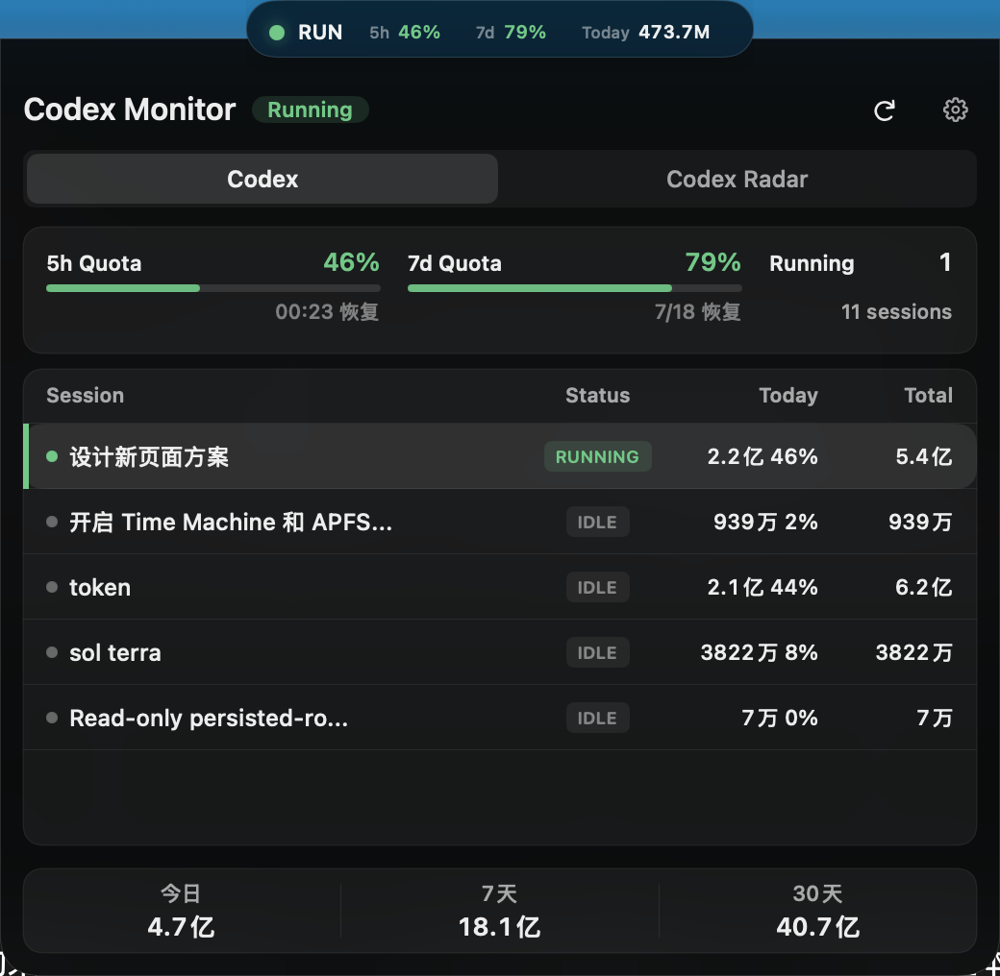
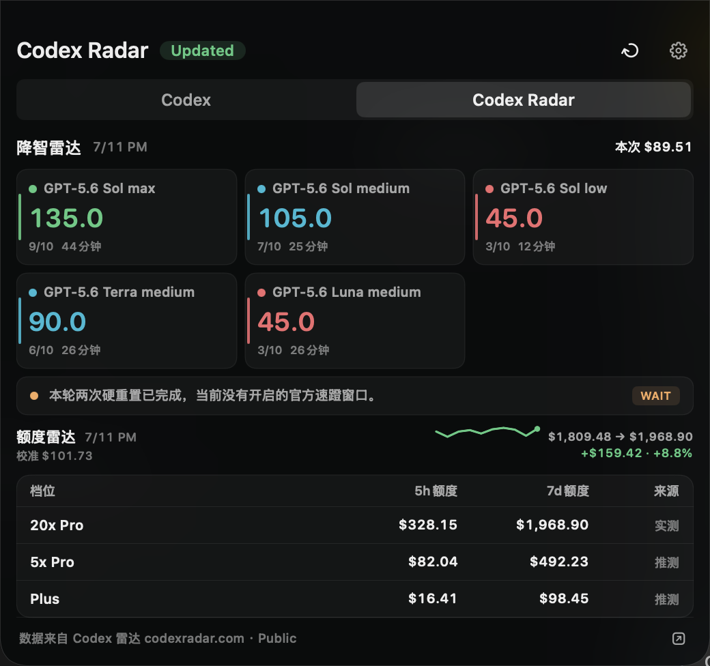

OPEN SOURCE · NATIVE SWIFTUI
macOS 14+
macOS 14+
Codex Monitor
让 Codex 的运行、额度与模型信号始终可见
A compact macOS HUD for local Codex activity, quota windows, task usage, and Codex Radar signals.
实时任务状态与 5h / 7d 剩余额度
浮动 HUD 与原生菜单栏两种模式
降智雷达、额度雷达与本地用量
github.com/jackiemingnew/codex-monitor-macos

